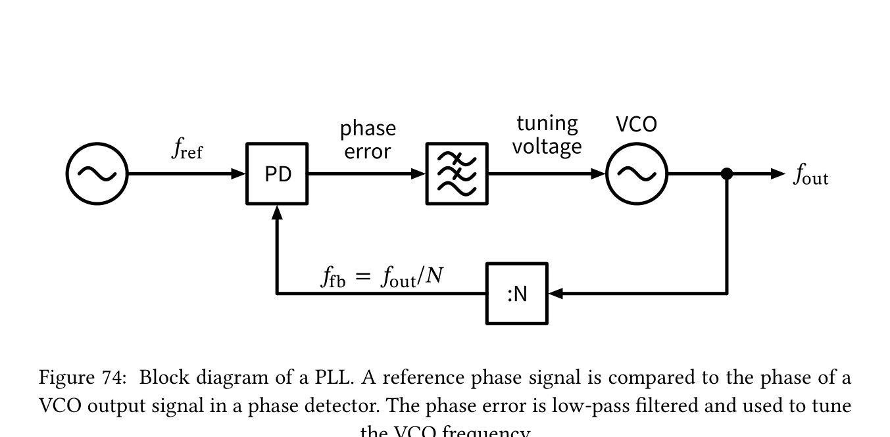
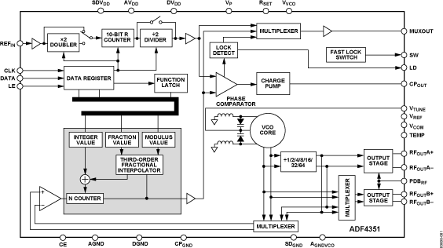

整机由哪些模块组成
沿参考边沿走一圈，找出频率在哪改变、比较发生在哪里。
数字逻辑需要节拍稳定的时钟，射频收发器需要频率准确的本振。两者都可以用 PLL 把参考源的稳定性带到另一个频率。

- 参考源给出比较节拍。
- 检测器比较参考和反馈相位，滤波器把纠偏信息变成控制量。
- 振荡器改变输出频率。加入反馈分频器后，检测器看到的是分频后的频率。
改一次分频比
这里用 40 MHz PFD 和整数反馈分频，观察锁定后的频率关系。
在芯片框图里找这条回路

ADF4351 还带参考分频和输出分频。观察 VCO 输出与外部 RF 输出各在哪个节点。